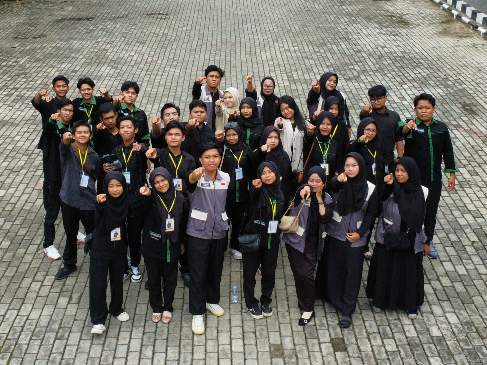

Mengenal Perintah Dasar Database
Apa sih Database itu?
Database adalah sebuah system yang di buat untuk mengorganisasi, menyimpan dan menarik data dengan mudah. Database terdiri dari kumpulan data yang terorganisir untuk 1 atau lebih penggunaan, dalam bentuk digital. Database digital di-manage menggunakan Database Management System (DBMS), yang menyimpan isi database, mengizinkan pembuatan dan maintenance data dan pencarian dan akses yang lain. Beberapa Database yang ada saat ini adalah : Mysql, Sql Server, Ms.Access, Oracle, dan PostgreSql.
[Sumber Referensi]Perintah Dasar Membuat Database
Untuk dapat membuat sebuah Database ada 7 perintah dasar yang biasa digunakan, yaitu:
-
Perintah Create
Perintah Create digunakan untuk membuat suatu objek baik berupa database ataupun berupa table dalam mysql.
Contoh:
-
Create Database

-
Create Table

Untuk tampilan table akan seperti ini:
no nama nim prodi - - - - - - - -
-
-
Perintah Insert
Perintah Insert digunakan untuk mengisi atau menambahkan data (record) baru pada table.
Contoh:

Untuk tampilan table akan seperti ini:
no nama nim prodi 1 Bagus Arifin 28 Pendidikan Komputer -
Perintah Select
Perintah Select digunakan untuk mengambil atau menampilkan data dari tabel.

-
Perintah Alter
Perintah Alter digunakan untuk mengubah struktur tabel yang sudah ada.

-
Perintah Update
Perintah Update digunakan untuk mengubah atau memperbarui data yang sudah ada di dalam tabel.

-
Perintah Delete
Perintah Delete digunakan untuk menghapus data (record) dari tabel.

-
Perintah Drop
Perintah Drop digunakan untuk menghapus objek secara permanen baik dalam bentuk Database, Table, maupun struktur dalam table.

Video Tutorial
Untuk dapat memahami lebih lanjut anda dapat menonton video tutorial dibawah ini.
Galeri Saya


